|
y = ƒ(x) + g(x)
dy / dx = ? |
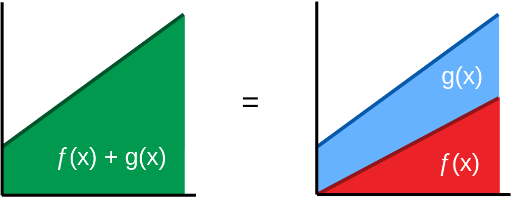 |
|
y = ƒ(x) + g(x)
Δƒ = ƒ(x + Δx) - ƒ(x) Δg = g(x + Δx) - g(x) Δy = (ƒ(x + Δx) + g(x + Δx)) - (ƒ(x) - g(x)) Δy = Δƒ + Δg dy / dx = Δy / Δx = (Δƒ + Δg) / Δx y' = ƒ'(x) + g'(x) |
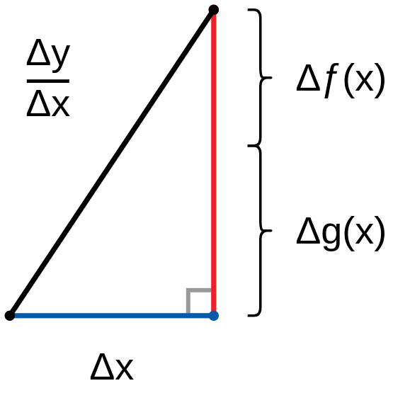 |
y(x) = ƒ(x) + g(x) , y(x + Δ) = ƒ(x + Δx) + g(x + Δx)
y'(x) = (y(x + Δ) - y(x)) / Δx = (ƒ(x + Δx) + g(x + Δx) - ƒ(x) - g(x)) / Δx
y'(x) = (ƒ(x + Δx) - ƒ(x) + g(x + Δx) - g(x)) / Δx
y'(x) = (ƒ(x + Δx) - ƒ(x)) / Δx + (g(x + Δx) - g(x)) / Δx = ƒ'(x) + g'(x)
|
ƒ(x) = 6 , g(x) = x
y = ƒ(x) + g(x) = x + 6 x = 8 → ƒ'(x) = 0 , g'(x) = 1 y' = 1 = ƒ'(x) + g'(x) |
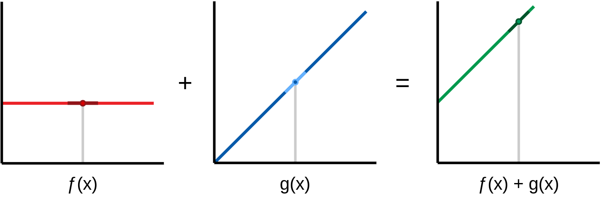 |
|
ƒ(x) = 0.5x , g(x) = 0.25x + 2
y = ƒ(x) + g(x) = 0.75x + 2 x = 4 → ƒ'(x) = 0.5 , g'(x) = 0.25 y' = 0.75 = ƒ'(x) + g'(x) |
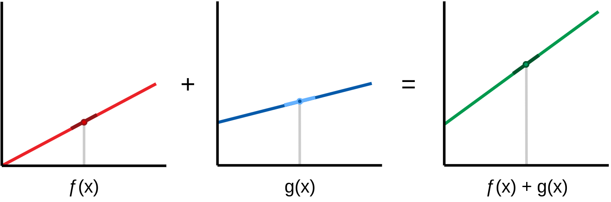 |
|
ƒ(x) = x(x - 10) = x2 - 10x , g(x) = 1.5x y = ƒ(x) + g(x) = x2 - 8.5x x = 5 → ƒ'(x) = 0 , g'(x) = 1.5 y' = 1.5 = ƒ'(x) + g'(x) |
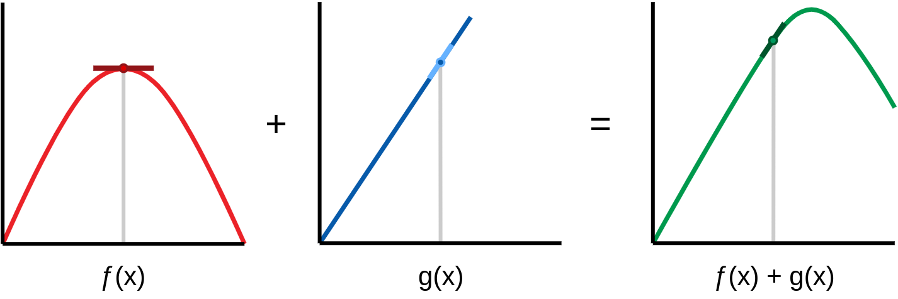 |
| y = axb dy / dx = ? |
|
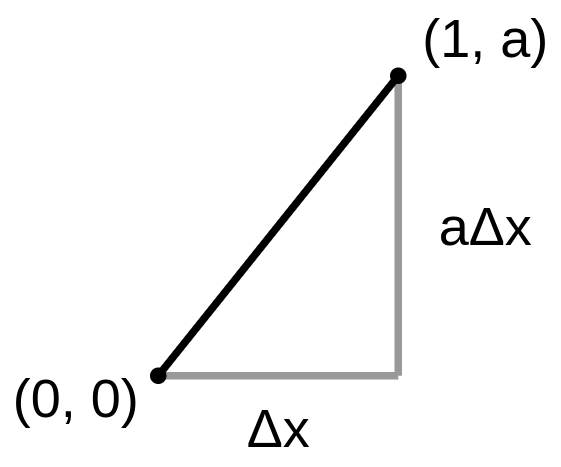 |
y = ax
Δy = aΔx dy / dx = Δy / Δx = a
y = axb , b ≠ 0
y = ax1 = ax
dy / dx = b × axb-1 dy / dx = 1 × ax0 = a |
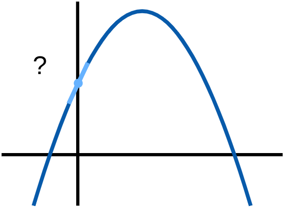 |
|
y(x) = ax0 = a , y(x + Δx) = a
Δy = y(x + Δx) - y(x) = a - a = 0 y'(x) = dy/dx = Δy/Δx = 0 / Δx = 0 → y = a → dy/dx = 0 |
b = 0
→ dy/dx ≠ baxb-1 → dy/dx = 0 |
|
y(x) = ax1 = ax
y(x + Δx) = a(x + Δx) = ax + aΔx Δy = y(x + Δx) - y(x) = ax + aΔx - ax = aΔx y'(x) = dy/dx = Δy/Δx = aΔx / Δx = a → y = ax → dy/dx = a y(x) = ax2 y(x + Δx) = a(x + Δx)2 = ax2 + 2axΔx + aΔx2 Δx << 1 → Δx2 << Δx , Δx2 ≈ 0 y(x + Δx) = ax2 + 2axΔx Δy = y(x + Δx) - y(x) = ax2 + 2axΔx - ax2 = 2axΔx y'(x) = dy/dx = Δy/Δx = 2axΔx / Δx = 2ax → y = ax2 → dy/dx = 2ax → y = axb → dy/dx = baxb-1 |
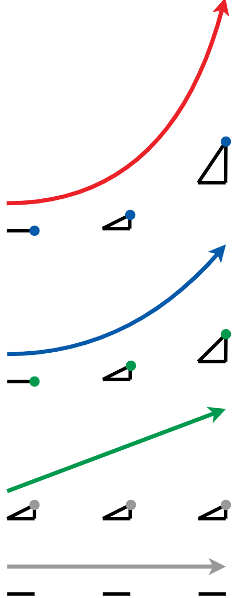 |
|
ƒ(x) = x2 + 2x - 8
ƒ'(x) = 2 × x2 - 1 + 2x1 - 1 - 0 ƒ'(x) = 2x1 + 2x0 = 2x + 2 ( x0 = 1 , x ∈ ℝ ) |
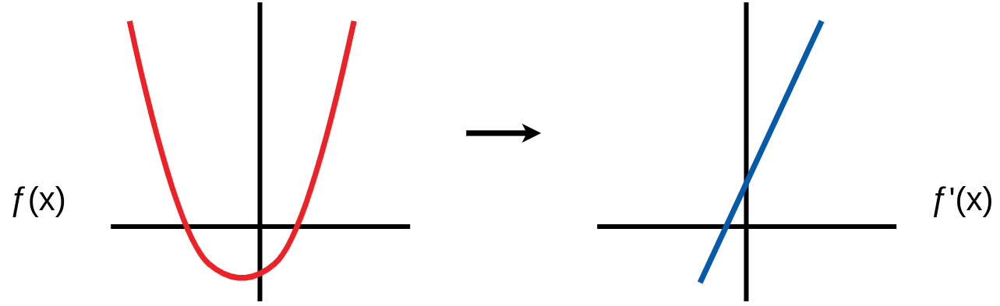 |
|
ƒ(x) = 2x + 2
ƒ'(x) = 1 × 2x1 - 1 + 0 ƒ'(x) = 2x0 = 2 ƒ'(x1) = ƒ'(x2) = 2 x1 , x2 ∈ ℝ |
|
|
ƒ(x) = 2
b = 0 → ƒ'(x) = 0 ƒ(x1) = ƒ(x2) = 2 x1 , x2 ∈ ℝ |
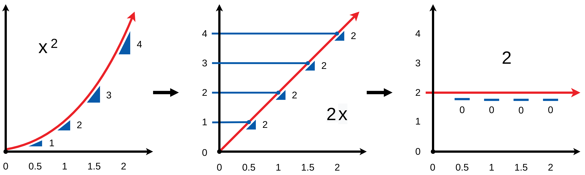
ƒ(x) → ƒ'(x) → ... → 0
| y = ƒ(x) × g(x) = ƒ(x) g(x) dy / dx = ? |
|
y = ƒ(x) × g(x)
dy/dx = ƒ'(x)g(x) + ƒ(x)g'(x) dy/dx = ƒ'g + ƒg' ƒ(x) = x , g(x) = -x + 5 → ƒ'(x) = 1 , g'(x) = -1 y = x × (-x + 5) = -x2 + 5x → dy/dx = -2x + 5 dy/dx = ƒ'(x)g(x) + ƒ(x)g'(x) dy/dx = 1 × (-x + 5) + x × -1 = -2x + 5 |
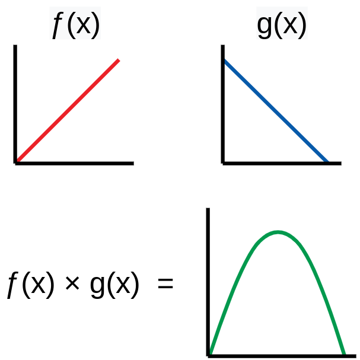 |
|
y(x) = ƒ(x) × g(x) = ƒ × g
y(x + Δx) = ƒ(x + Δx) × g(x + Δx) = (ƒ + Δƒ) × (g + Δg) y(x + Δx) = ƒg + gΔƒ + ƒΔg + ΔƒΔg Δy = y(x + Δx) - y(x) = ƒg + gΔƒ + ƒΔg + ΔƒΔg - ƒg Δy = gΔƒ + ƒΔg + ΔƒΔg Δƒ << 1 , Δg << 1 → ΔƒΔg ≈ 0 → Δy = gΔƒ + ƒΔg dy/dx = Δy/Δx = (gΔƒ + ƒΔg) / Δx = gΔƒ/Δx + ƒΔg/Δx dy/dx = g(dƒ/dx) + ƒ(dg/dx) = g(x)ƒ'(x) + ƒ(x)g'(x) |
|
ƒ(x) = 1.5 , g(x) = x
ƒ'(x) = 0 , g'(x) = 1 y = ƒ(x) g(x) = 1.5x dy/dx = g(x)ƒ'(x) + ƒ(x)g'(x) dy/dx = 0x + 1.5 × 1 dy/dx = 1.5 |
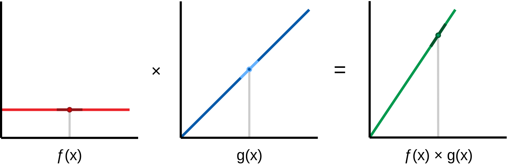 |
|
ƒ(x) = x , g(x) = -x + 4
ƒ'(x) = 1 , g'(x) = -1 y = ƒ(x) g(x) = -x2 + 4x dy/dx = g(x)ƒ'(x) + ƒ(x)g'(x) dy/dx = (-x + 4) + -x dy/dx = -2x + 4 x = 2 → dy/dx = 0 |
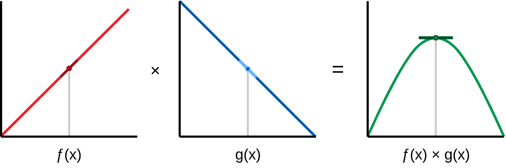 |
|
ƒ(x) = -x2 + 8x , g(x) = -0.5x + 3
ƒ'(x) = -2x + 8 , g'(x) = -0.5 y = ƒ(x) g(x) = 0.5x3 - 7x2 + 24x dy/dx = g(x)ƒ'(x) + ƒ(x)g'(x) dy/dx = (-2x + 8)(-0.5x + 3) - 0.5(-x2 + 8x) dy/dx = 1.5x2 - 14x + 24 x = 4 → ƒ(4) = 16 , g(4) = 1 ƒ'(4) = 0 , g'(4) = -0.5 dy/dx = 0(1) + -0.5(16) = -8 |
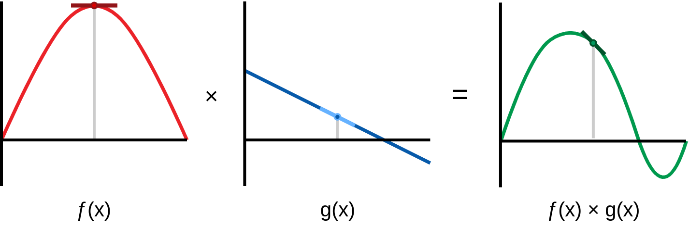 |
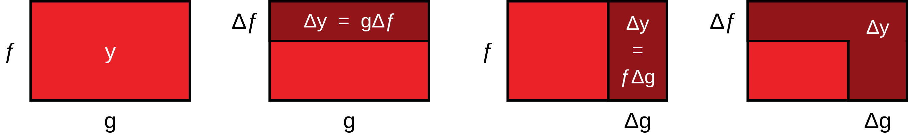
| y = ƒ(x) / g(x) dy / dx = ? |
|
y = ƒ(x) / g(x)
dy/dx = (ƒ'g - ƒg') / g2 ƒ(x) = x2 , g(x) = x → ƒ'(x) = 2x , g'(x) = 1 y = x2 / x = x → dy/dx = 1 dy/dx = (ƒ'(x)g(x) - ƒ(x)g'(x)) / g(x)2 dy/dx = (2x2 - x2) / x2 = 1 |
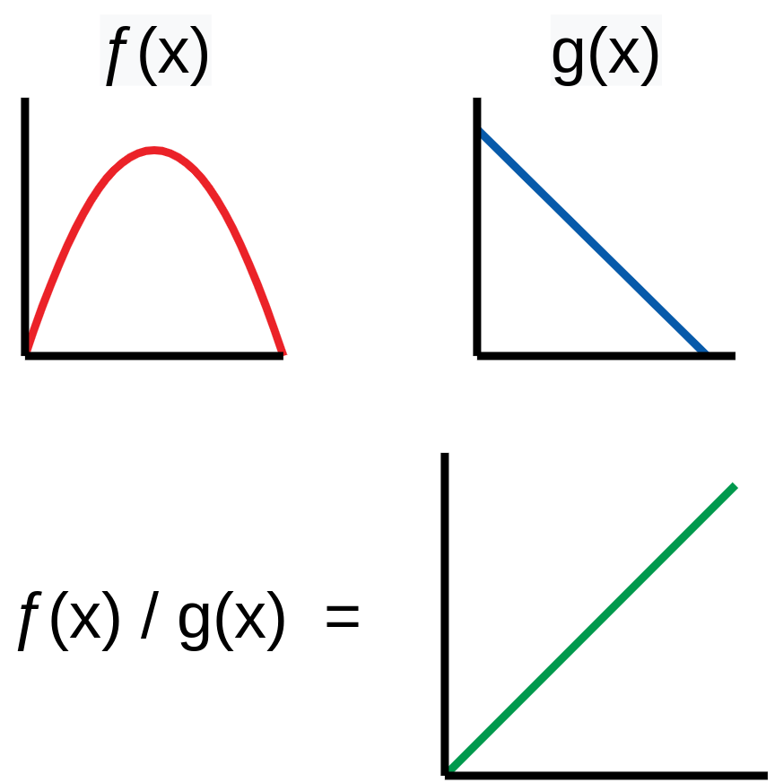 |
|
y(x) = ƒ(x) / g(x) = ƒ / g
y(x + Δx) = ƒ(x + Δx) / g(x + Δx) = (ƒ + Δƒ) / (g + Δg) Δy = y(x + Δx) - y(x) = (ƒ + Δƒ) / (g + Δg) - (ƒ / g) Δy = (g(ƒ + Δƒ) - ƒ(g + Δg)) / g(g + Δg) Δy = (gƒ + gΔƒ) - ƒg - fΔg) / g(g + Δg) Δy = (gΔƒ - ƒΔg) / g(g + Δg) Δx ≈ 0 → g ≈ g + Δg → g(g + Δg) ≈ g2 → Δy = (gΔƒ - ƒΔg) / g2 dy/dx = Δy/Δx = (gΔƒ - ƒΔg) / (g2Δx) dy/dx = (g(Δƒ/Δx) - ƒ(Δg/Δx)) / g2 dy/dx = (g(dƒ/dx) - ƒ(dg/dx)) / g2 dy/dx = (g(x)ƒ'(x) - ƒ(x)g'(x)) / g(x)2 |
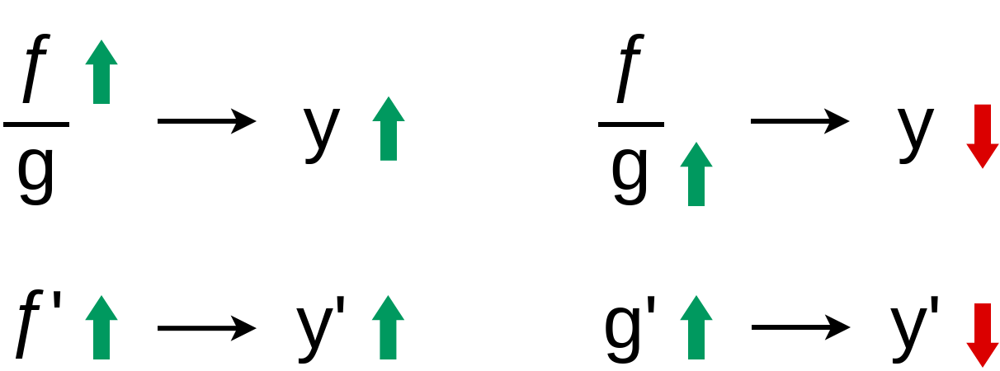
|
ƒ(x) = 1.5x , g(x) = 1.5
ƒ'(x) = 1.5 , g'(x) = 0 y = ƒ(x) / g(x) = x dy/dx = (ƒ'(x)g(x) - ƒ(x)g'(x)) / (g(x)2) dy/dx = (1.5 × 1.5 + 0 × 1.5x) / (2.25) dy/dx = 1 |
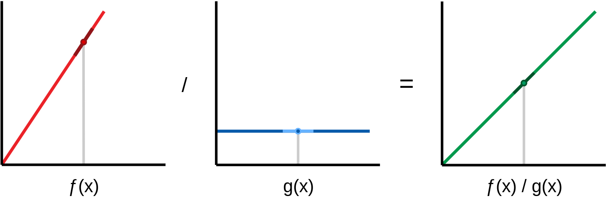 |
|
ƒ(x) = -x2 + 4x , g(x) = x
ƒ'(x) = -2x + 4 , g'(x) = 1 y = ƒ(x) / g(x) = -x + 4 dy/dx = (ƒ'(x)g(x) - ƒ(x)g'(x)) / (g(x)2) dy/dx = ((-2x + 4) × x - (-x2 + 4x) × 1) / x2 dy/dx = (-2x2 + 4x + x2 - 4x) / x2 = -1 |
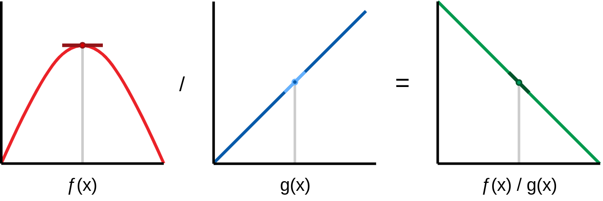 |
|
ƒ(x) = 0.5x3 - 7x2 + 24x , g(x) = -x2 + 8x
ƒ'(x) = 1.5x2 - 14x + 24 , g'(x) = -2x + 8 y = ƒ(x) / g(x) = (0.5x3 - 7x2 + 24x) / (-x2 + 8x) y = x (-0.5x + 3) (-x + 8) / (x (-x + 8)) y = -0.5x + 3 dy/dx = (ƒ'(x)g(x) - ƒ(x)g'(x)) / (g(x)2) dy/dx = ((1.5x2 - 14x + 24)(-x2 + 8x) - (0.5x3 - 7x2 + 24x)(-2x + 8)) / (-x2 + 8x)2 dy/dx = (0.25x4 - 4x3 + 16x2) / (-x2 + 8x)2 dy/dx = (0.5x2 - 4x)2 / (-x2 + 8x)2 dy/dx = -0.5 |
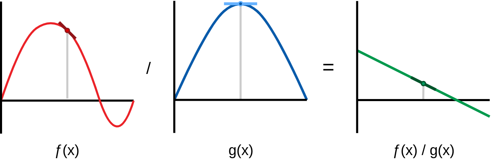 |
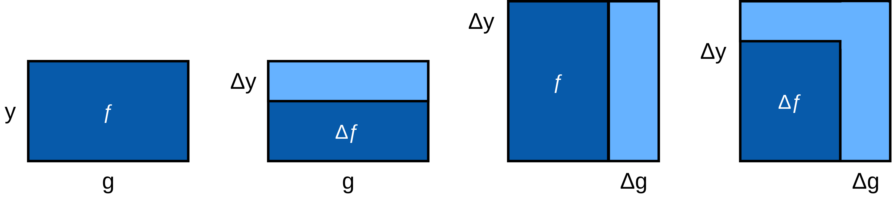
| y = ƒ(g(x)) dy / dx = ? |
|
y = ƒ(g(x))
dy/dx = g'(x) ƒ'(g(x)) g(x) = x → ƒ(g(x)) = ƒ(x) , g'(x) = 1 dy/dx = g'(x) ƒ'(g(x)) = ƒ'(x) |
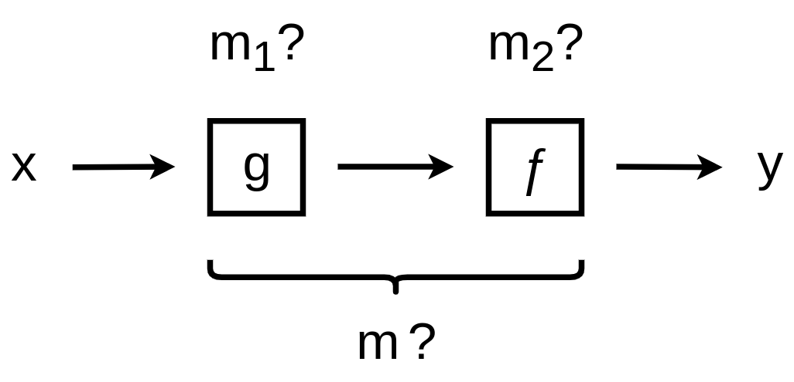 |
|
ƒ(x) = x2 + 1 , g(x) = 2
ƒ'(x) = 2x , g'(x) = 0 y = ƒ(g(x)) = 22 + 1 = 5 dy/dx = g'(x) ƒ'(g(x)) dy/dx = 0 × 2(2) = 0 |
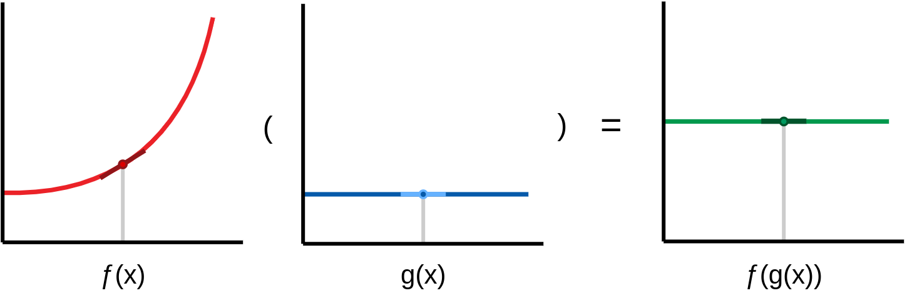 |
|
ƒ(x) = 1.5x , g(x) = 2x/3
ƒ'(x) = 1.5 , g'(x) = 2/3 y = ƒ(g(x)) = 1.5(2x/3) = x dy/dx = g'(x) ƒ'(g(x)) dy/dx = 2/3 × 1.5 = 1 |
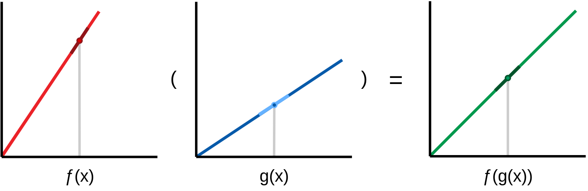 |
|
ƒ(x) = x2 + 1 , g(x) = 1.5x
ƒ'(x) = 2x , g'(x) = 1.5 y = ƒ(g(x)) = (1.5x)2 + 1 y = 2.25x2 + 1 dy/dx = g'(x) ƒ'(g(x)) dy/dx = 1.5 × 2(1.5x) = 4.5x |
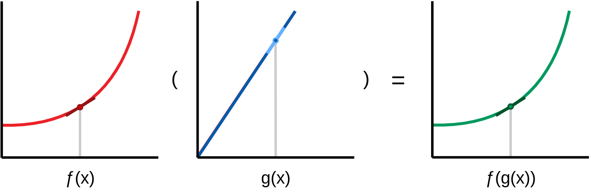 |
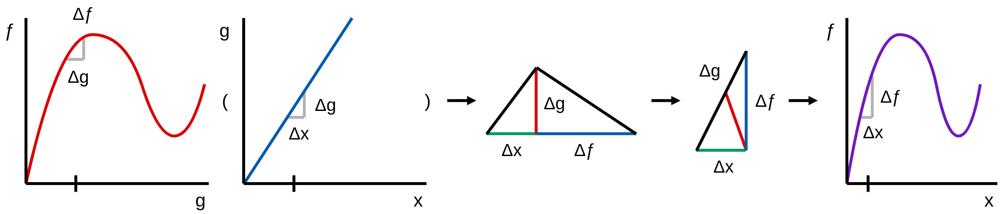
|
ƒ(x) =
x = |
ƒ'(x) = 0.00000
|